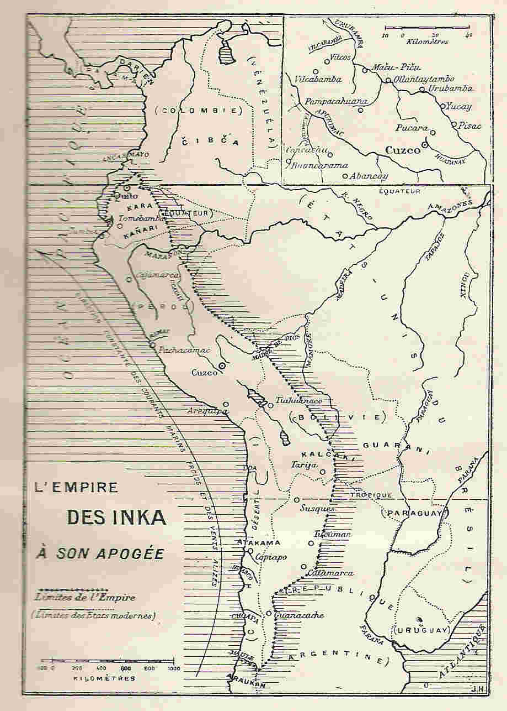
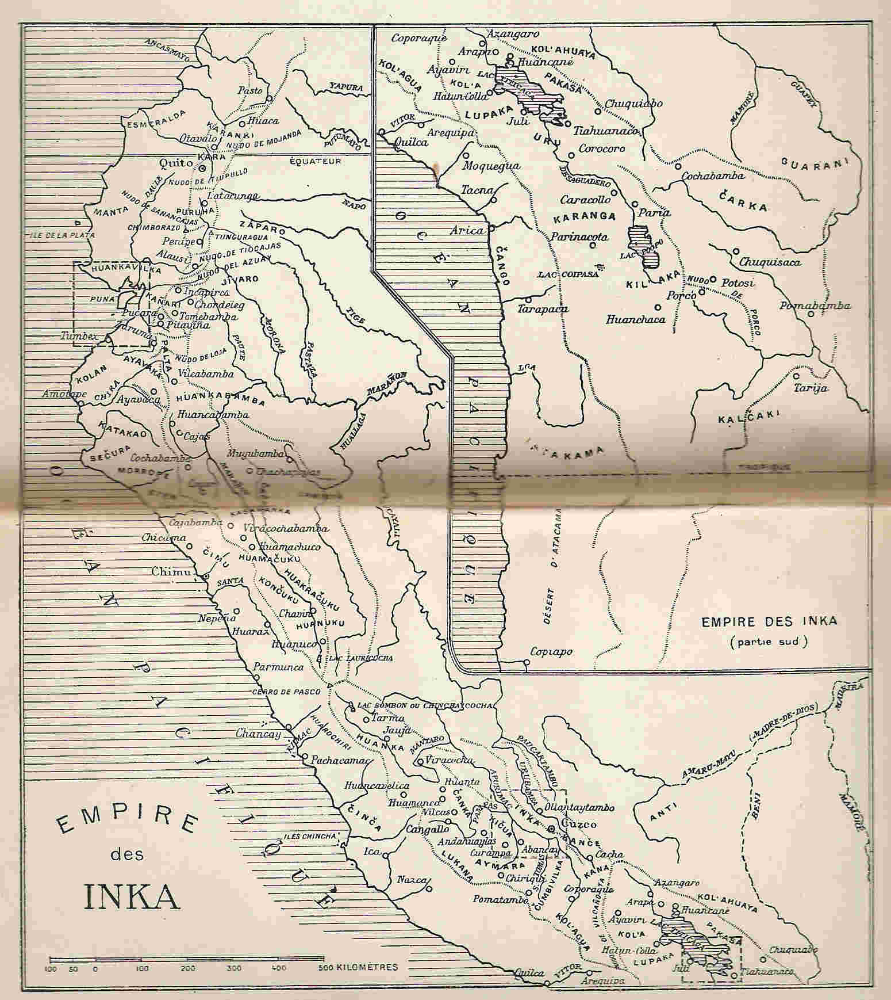
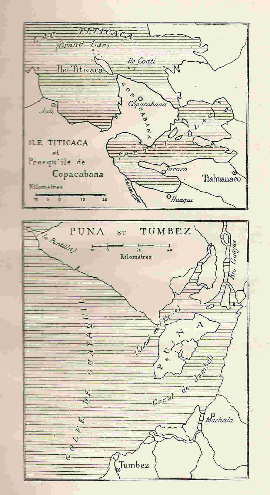

L'Empire socialiste des Inka
Université de Paris — Travaux et mémoires de l'Institut d'Ethnologie — V (1928)
par Louis Baudin
Professeur à la faculté de Droit de Dijon
Cartes géographiques



Chapitre précédent
|
Appendice
|
Table des matières
|
Page d'accueil